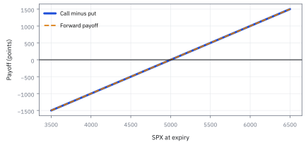
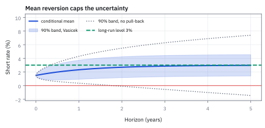
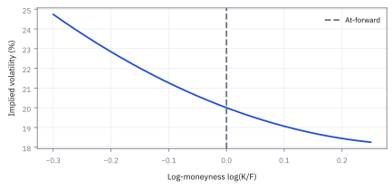

13.4 Put–Call Parity and the Volatility Smile
ใช้กระแสเงินสดเดียวกันตรวจราคาสิทธิ์ซื้อและสิทธิ์ขาย
ดัชนีหุ้น 1,000 จุด option ยุโรป strike 1,000 อายุ 6 เดือน ดอกเบี้ย 2% call ราคา 45 จุด put ราคา 32 จุด ราคาคู่นี้เข้ากันไหม ถ้าไม่ ทำกำไรไร้ความเสี่ยงได้กี่จุด?
เฉลย: ไม่เข้ากัน call ลบ put ต้องเท่ากับ 9.95 จุด แต่ตลาดให้ 13.00 ขาย call ซื้อ put ซื้อดัชนี และกู้ 990.05 จุด ได้ 3.05 จุดวันนี้ และทุกปลายทางคืนหนี้พอดี
ศัพท์ชุดแรก: ขาทั้งสี่ของสมการที่จริงเสมอ
- put–call parity
-
คืออะไร: สมการที่ผูก call, put, หุ้น และเงินฝาก ที่ strike และวันหมดอายุเดียวกัน ให้เท่ากันเสมอ
ใช้ทำอะไร: ใช้ตรวจว่าราคาสี่ตัวบนหน้าจอสอดคล้องกันไหม และใช้สร้างสินทรัพย์ตัวหนึ่งจากอีกสามตัว
ทำไมต้องใช้: เพราะมันไม่พึ่งแบบจำลองใดเลย ไม่ต้องรู้ว่าหุ้นผันผวนแค่ไหน ไม่ต้องเชื่อ Black-Scholes มันจริงเพราะเงินรับสองฝั่งเท่ากันทุกกรณี เท่านั้นเอง
- prepaid forward
-
คืออะไร: การจ่ายเงินวันนี้เพื่อรับหุ้นในอนาคต จ่ายก่อนรับทีหลัง
ใช้ทำอะไร: ใช้เป็นขาหุ้นในสมการ เพราะถ้าหุ้นจ่ายปันผลระหว่างทาง เราจะไม่ได้ปันผลนั้น มูลค่าวันนี้จึงต่ำกว่าราคาหุ้น
ทำไมต้องใช้: เพราะการใส่ราคาหุ้นดิบลงในสมการทั้งที่หุ้นจ่ายปันผล จะทำให้เห็นส่วนต่างที่ไม่มีอยู่จริง แล้วเข้าใจผิดว่าเจอโอกาสทำกำไร
- forward price
-
คืออะไร: ราคาส่งมอบที่ทำให้สัญญาซื้อขายล่วงหน้ามีมูลค่าเป็นศูนย์ในวันที่ตกลง
ใช้ทำอะไร: ใช้เป็นจุดกลางของแกนในหัวข้อนี้ตอนวาด smile
ทำไมต้องแยกจากตัวบน: เพราะตัวบนคือเงินที่จ่ายวันนี้ ตัวนี้คือเงินที่จ่ายวันหน้า ต่างกันด้วยตัวคูณดอกเบี้ยหนึ่งตัว
- discount factor
-
คืออะไร: มูลค่าวันนี้ของเงินหนึ่งหน่วยที่จะได้รับในวันหมดอายุ คือ $e^{-rT}$
ใช้ทำอะไร: ใช้กับขา strike ในสมการ เพราะ strike เป็นเงินที่จ่ายวันหน้า
ทำไมต้องใช้: เพราะไม่อย่างนั้นเราจะบวกเงินคนละเวลาเข้าด้วยกัน ซึ่งผิดเชิงหน่วยพอ ๆ กับการบวกเมตรกับวินาที
- continuous dividend yield
-
คืออะไร: อัตราเงินปันผลที่สมมติว่าไหลออกตลอดเวลา เขียนแทนด้วย $q$
ใช้ทำอะไร: ใช้ลดขาหุ้นลงเป็น $e^{-qT}$ เท่าของราคาวันนี้
ทำไมต้องใช้: เพราะปันผลจริงจ่ายเป็นก้อนไม่กี่ครั้งต่อปี แต่การสมมติให้ไหลต่อเนื่องทำให้สูตรเรียบง่ายพอที่จะใช้งานได้ และคลาดเคลื่อนน้อยเมื่อมองในช่วงเวลายาว
- synthetic position
-
คืออะไร: พอร์ตที่ประกอบขึ้นแล้วให้เงินรับเหมือนสินทรัพย์อีกตัวหนึ่งทุกกรณี
ใช้ทำอะไร: ใช้สร้างหุ้นจาก option หรือสร้าง put จาก call
ทำไมต้องใช้: เพราะบางครั้งของจริงยืมมาขายไม่ได้ หรือแพงกว่า การประกอบขึ้นเองจึงถูกกว่าและทำได้จริงกว่า
- conversion
-
คืออะไร: รายการที่ซื้อหุ้น ซื้อ put และขาย call พร้อมกัน
ใช้ทำอะไร: ใช้เมื่อฝั่ง option แพงกว่าฝั่งหุ้น
ทำไมต้องมีชื่อเฉพาะ: เพราะโต๊ะเทรดต้องสั่งทั้งชุดพร้อมกัน การมีชื่อเดียวสำหรับสามขาช่วยไม่ให้ส่งคำสั่งขาดขา
- reversal
-
คืออะไร: รายการทิศตรงข้ามกับ conversion คือขายหุ้น ขาย put และซื้อ call
ใช้ทำอะไร: ใช้เมื่อฝั่งหุ้นแพงกว่าฝั่ง option
ทำไมต้องรู้ทั้งคู่: เพราะส่วนต่างเกิดได้ทั้งสองทิศ และต้นทุนการทำสองทิศไม่เท่ากัน ฝั่งที่ต้องยืมหุ้นมาขายมักแพงกว่า
- bid–ask
-
คืออะไร: ราคาที่ขายได้กับราคาที่ซื้อได้ ณ เวลาเดียวกัน ซึ่งไม่เท่ากัน
ใช้ทำอะไร: ใช้ตัดสินว่าส่วนต่างที่เห็นนั้นทำจริงได้หรือไม่
ทำไมต้องดู: เพราะสมการ parity ที่ตรวจด้วยราคากลางอาจดูเหมือนมีเงินฟรี แต่เมื่อต้องซื้อที่ราคาสูงและขายที่ราคาต่ำครบสี่ขา ส่วนต่างนั้นมักหายไปหมด
- stale quote
-
คืออะไร: ราคาบนหน้าจอที่ยังไม่อัปเดตตามตลาดที่เพิ่งขยับไป
ใช้ทำอะไร: ใช้เป็นคำอธิบายแรกเสมอเมื่อเห็นส่วนต่างที่ใหญ่ผิดปกติ
ทำไมต้องนึกถึงก่อน: เพราะโอกาสที่จะเจอเงินฟรีในตลาดที่มีคนดูอยู่ทั้งวัน น้อยกว่าโอกาสที่ราคาใดราคาหนึ่งค้างอยู่มาก
- box arbitrage
-
คืออะไร: การประกอบ option สี่ขาที่ให้เงินรับคงที่แน่นอนในวันหมดอายุ
ใช้ทำอะไร: ใช้เป็นวิธีกู้หรือให้กู้เงินผ่านตลาด option
ทำไมต้องรู้: เพราะราคาที่ตลาดให้กับกล่องนี้ เผยอัตราดอกเบี้ยที่ตลาด option ใช้จริง ซึ่งอาจต่างจากอัตราที่เราใส่ในสูตร
- expiry
-
คืออะไร: วันและเวลาที่สิทธิ์สิ้นสุดลง
ใช้ทำอะไร: ใช้จับคู่ call กับ put ให้ตรงกันก่อนใช้สมการ
ทำไมต้องตรง: เพราะ parity ใช้ได้เฉพาะเมื่อทั้งสองใบหมดอายุวันเดียวกัน จับคู่ผิดวันแล้วส่วนต่างที่ได้ไม่มีความหมายเลย
- maturity
-
คืออะไร: ระยะเวลาที่เหลือจากวันนี้ถึงวันหมดอายุ มักวัดเป็นปี
ใช้ทำอะไร: เป็นตัว $T$ ที่ใส่ลงในตัวคูณดอกเบี้ยและในสูตรราคา
ทำไมต้องแยกจาก expiry: เพราะตัวหนึ่งคือจุดบนปฏิทิน อีกตัวคือความยาวของช่วง ตัวหลังเปลี่ยนค่าทุกวันแม้ตัวแรกจะคงที่
สัญลักษณ์ที่ใช้ในหัวข้อนี้
| สัญลักษณ์ | ความหมาย | หน่วย |
|---|---|---|
| $S_0$ | ราคาหุ้นวันนี้ | USD |
| $S_T$ | ราคาหุ้นในวันหมดอายุ ซึ่งยังไม่รู้ค่า | USD |
| $K$ | strike ที่ทั้ง call และ put ในสมการต้องใช้ค่าเดียวกัน | USD |
| $T$ | อายุคงเหลือ ซึ่งทั้งสองใบต้องเท่ากันด้วย | ปี |
| $r$ | อัตราดอกเบี้ยไร้ความเสี่ยง คือราคาของการถือเงินไว้ | ปี⁻¹ |
| $q$ | อัตราเงินปันผลต่อเนื่อง คือสิ่งที่คนถือสิทธิ์ไม่ได้รับ | ปี⁻¹ |
| $D=e^{-rT}$ | ตัวคิดลดที่ใช้กับขา strike | ไม่มีหน่วย |
| $A=S_0e^{-qT}$ | มูลค่าวันนี้ของการได้หุ้นในวันหมดอายุ ต่ำกว่าราคาหุ้นเพราะไม่ได้ปันผลระหว่างทาง | USD |
| $B=Ke^{-rT}$ | มูลค่าวันนี้ของการจ่าย strike ในวันหมดอายุ | USD |
| $F=S_0e^{(r-q)T}$ | ราคาส่งมอบที่ตกลงกันได้วันนี้ ใช้เป็นจุดกลางของแกนตอนวาด smile | USD |
| $C(K,T),P(K,T)$ | ราคา European call และ put ที่ strike กับ expiry เดียวกัน | จุด SPX |
| $\varepsilon,m$ | parity residual และตัวคูณเงินสดของสัญญา | จุด SPX, USD ต่อจุด |
| $\sigma_{\rm imp}(K,T),k=\log(K/F)$ | implied volatility และ log-moneyness | ปี⁻¹ᐟ², ไม่มีหน่วย |
| $\mathbb Q$ | กติกาถ่วงน้ำหนักที่ใช้ตั้งราคา ไม่ใช่ความน่าจะเป็นจริง | ไม่มีหน่วย |
| $f^{\mathbb Q}(K)$ | density ของราคาปลายทางที่ระดับ $K$ ภายใต้กติกานั้น อ่านได้จากความโค้งของราคา call | USD⁻¹ |
| $(x)^+$ | ตัดค่าติดลบทิ้งให้เหลือศูนย์ | ตาม $x$ |
ที่มาที่ไป: ความสัมพันธ์ที่จริงเสมอ ไม่ว่าแบบจำลองจะผิดแค่ไหน
ข้อจำกัดที่น่าอึดอัดของทุกอย่างในบทนี้คือ มันตั้งอยู่บนแบบจำลองที่เรารู้ว่าไม่ตรงกับความจริง
หัวข้อนี้จึงมีค่าเป็นพิเศษ เพราะสิ่งที่มันให้เป็นความสัมพันธ์ที่จริงเสมอ โดยไม่ต้องสมมติอะไรเกี่ยวกับการเคลื่อนไหวของราคาเลย
เหตุผลที่มันจริงเสมอเพราะมันมาจากการเทียบเงินที่ได้รับตอนหมดอายุอย่างเดียว ถ้าสองพอร์ตจ่ายเท่ากันทุกกรณี ราคาวันนี้ก็ต้องเท่ากัน ไม่งั้นมีเงินฟรีให้เก็บ
โต๊ะจริงใช้มันเป็นเครื่องตรวจตัวแรกทุกเช้า เพราะมันจับความผิดปกติได้โดยไม่ต้องเชื่อแบบจำลองใด ๆ
Worked Example — โจทย์และสิ่งที่ให้มา
โจทย์ให้อะไรมาบ้าง: ใช้ European SPX options ที่ชำระเงินสด strike 5,000 จุด, อายุ 0.5 ปี, spot 5,000 จุด, อัตราดอกเบี้ย 4% ต่อปี, dividend yield 1.5% ต่อปี, call midquote 300 จุด, put midquote 235 จุด และตัวคูณ \$100 ต่อจุด
ตัวอย่างถือ curve และ dividend yield คงที่เพื่อสอนบัญชี ก่อนเรียกว่า arbitrage ต้องใช้ call bid เมื่อขาย, put ask เมื่อซื้อ, ราคาซื้อขายของ stock หรือ forward legs และ funding ที่ทำได้จริง ไม่ใช่ midquotes ทุกขาราวกับตลาดใจดีพร้อมกัน
ขั้นที่ 1 — พิสูจน์ payoff identity ทีละสถานะ
ความสัมพันธ์นี้ไม่ใช่สูตรที่ต้องท่อง แต่พิสูจน์ได้ด้วยการไล่สองกรณีตอนหมดอายุ สูตรข้างล่างไม่ใช้แบบจำลองราคาเลยแม้แต่ข้อเดียว ไม่ต้องรู้ว่าหุ้นเดินอย่างไร จึงเป็นความสัมพันธ์ที่ยังจริงแม้ Black–Scholes จะผิด
พิสูจน์แบบไม่มีที่ให้เถียง คือไล่ทุกปลายทางที่เป็นไปได้ ซึ่งมีแค่สองแบบ ราคาจบสูงกว่า strike call จ่ายส่วนต่าง put ไม่จ่าย ราคาจบต่ำกว่า call ไม่จ่าย put จ่ายส่วนต่างอีกทาง
เครื่องหมายลบหน้า put ทำให้ผลออกมาติดลบ ซึ่งก็คือส่วนต่างที่ติดลบพอดี สองกรณีจึงให้ผลเดียวกัน ข้อความนี้เป็นจริงทุกปลายทางโดยไม่มีข้อยกเว้น และไม่ได้ใช้แบบจำลองอะไรเลยสักข้อ
ลองด้วยตัวเลขที่ strike 105 จบที่ 120 ได้ 15 ซึ่งเท่ากับ 120 ลบ 105 จบที่ 90 ได้ลบ 15 ซึ่งเท่ากับ 90 ลบ 105 ตรวจได้ด้วยมือทั้งสองฝั่ง
ขั้นที่ 2 — แปลง payoff เท่ากันเป็นราคาวันนี้
ถ้าสองพอร์ตจ่ายเท่ากันทุกสถานะ ราคาวันนี้ต้องเท่ากันด้วย ไม่งั้นมีเงินฟรีให้เก็บ สูตรข้างล่างแปลง identity ของ payoff ในขั้นที่ 1 ให้เป็นความสัมพันธ์ของราคาวันนี้ และสิ่งเดียวที่ต้องเพิ่มคือวิธีสร้างสองพอร์ตที่จ่ายหุ้นและเงินสด
ลูกศรหยักอ่านว่า จ่ายเป็น ที่วันหมดอายุ
$A$ คือเงินที่ต้องใช้วันนี้เพื่อให้มีหุ้นหนึ่งหุ้นในวันหมดอายุ วิธีทำคือซื้อหุ้นวันนี้น้อยกว่าหนึ่งหุ้น แล้วเอาปันผลที่ไหลเข้ามาซื้อเพิ่มเรื่อย ๆ จำนวนหุ้นจะโตจนครบหนึ่งพอดี ต้นทุนวันนี้จึงถูกกว่าราคาหุ้น ส่วน $B$ คือเงินฝากวันนี้ที่โตเป็น strike พอดีในวันหมดอายุ
ถือ $A$ และกู้ $B$ จึงได้รับหุ้นหนึ่งหุ้นและต้องจ่าย strike พอดี ซึ่งเป็นสิ่งเดียวกับที่ขั้นที่ 1 บอกว่า call ลบ put จ่าย
กติกาข้อเดียวที่ใช้คือสองพอร์ตที่จ่ายเท่ากันทุกสถานะต้องราคาเท่ากันวันนี้ ไม่มีสมมติฐานเรื่อง distribution ของราคาเลย สองบรรทัดสุดท้ายเขียนใหม่ด้วยราคาส่งมอบล่วงหน้า ซึ่งเป็นรูปที่โต๊ะใช้จริง
ขั้นที่ 3 — คำนวณขา underlying และ strike
แทนตัวเลขจากหน้าจอ คิดสองขาแยกกันก่อน
เลขชี้กำลัง: $0.015\times0.5=0.0075$ และ $e^{-0.0075}=0.992528$ คูณ 5,000 ได้ 4,962.64 ส่วน $0.04\times0.5=0.02$ และ $e^{-0.02}=0.980199$ คูณ 5,000 ได้ 4,900.99
ทั้งสองขาเป็นมูลค่าปัจจุบันหน่วยจุด SPX โดย A ลดด้วย dividend yield และ B ลดด้วย risk-free rate
ขั้นที่ 4 — วัด residual ของหน้าจอ
เทียบสองฝั่งว่าห่างกันเท่าไร ส่วนต่างนี้คือสิ่งที่จะบอกว่ามีโอกาสทำกำไรจริงหรือแค่ noise
call ลบ put บนหน้าจอแพงกว่า synthetic forward 3.353092 จุดก่อน bid–ask, fees และ funding
ขั้นที่ 5 — นิยามของรายการที่จะซื้อขายจริง และเงินเข้าออกวันแรก
บรรทัดนี้เป็น รายการที่เรากำหนดขึ้น ว่าจะซื้อขายอะไรบ้าง ไม่ใช่ผลที่พิสูจน์ ทิศทางของทุกขาถูกเลือกให้ตรงข้ามกับส่วนที่แพงเกินไป และเครื่องหมายของเงินสด มาจากการบวกลบราคาของสี่ขาตามทิศที่เลือก ตัวเลขที่ได้คือเงินที่เข้ากระเป๋าวันแรก ซึ่งจะถูกตรวจในขั้นถัดไปว่ามันรอดไปถึงวันหมดอายุจริงหรือไม่
ขาย call ซื้อ put ซื้อ prepaid forward และกู้มูลค่าปัจจุบันของ strike รายการได้เงินเริ่มต้น 3.353092 จุดตาม sign convention ของ cash flow
ขั้นที่ 6 — ตรวจ payoff ของรายการก่อนเรียกกำไร
ก่อนจะเรียกว่ากำไรฟรี ต้องพิสูจน์ว่าตอนหมดอายุไม่เหลือความเสี่ยงเลย ไม่ว่าราคาไปทางไหน
สี่ขาหักล้างเป็นศูนย์ทุก S_T และ residual คูณตัวคูณสัญญาเป็น \$335.31 หากทุกขา execute ได้ตามราคาที่ใช้
แล้วเอาไปใช้ทำอะไรได้จริงบ้าง
ความสัมพันธ์ที่ต้องเป็นจริงเสมอ ให้เครื่องมือตรวจสอบที่ไม่ขึ้นกับแบบจำลองใด ๆ
ใช้ตรวจราคาบนหน้าจอว่าผิดปกติหรือไม่ ซึ่งเป็นการตรวจที่ทำได้ในไม่กี่วินาที และไม่ต้องเชื่อแบบจำลองอะไรเลย
ใช้แปลงราคาระหว่างสิทธิ์ซื้อกับสิทธิ์ขาย เพื่อเลือกซื้อตัวที่สภาพคล่องดีกว่า
ใช้เป็นฐานของการอ่านรอยยิ้ม เพราะความสัมพันธ์นี้บังคับให้ทั้งสองฝั่งมีความผันผวนเท่ากัน
ภาพ 13.4a — Call ลบ put คือ forward payoff

เส้น call ลบ put ทับเส้น $S_T-K$ ทุกจุด ไม่ว่าปลายทางอยู่ฝั่งใด นี่คือเหตุผลจาก payoff ก่อนมีแบบจำลอง volatility เข้ามา
ภาพ 13.4b — เงินเริ่มต้นมาจากสี่ขา

แท่งแสดง cash flow เมื่อเปิดรายการ: รับ call premium, จ่าย put, จ่าย prepaid forward และรับเงินจาก short bond ผลรวมจุดสีเขียวคือ 3.3531 จุด ไม่ควรดูเพียงส่วนต่าง option 65 จุดแล้วลืม financing legs
ศัพท์ชุดที่สอง: เมื่อเลิกเชื่อว่า volatility เดียวใช้ได้ทุก strike
- implied volatility
- implied volatility คือค่า volatility ที่เมื่อใส่ในสูตรราคาแล้วคืน market price ของ option ใช้แปลงราคาต่าง strike ให้เทียบกันบนสเกลเดียว แต่ยังเป็นผลย้อนจากราคา ไม่ใช่สิ่งสังเกตตรง
- volatility smile
-
คืออะไร: รูปที่ได้เมื่อวาด implied volatility ของทุก strike ที่วันหมดอายุเดียวกัน แล้วพบว่าปีกทั้งสองข้างสูงกว่าตรงกลาง
ใช้ทำอะไร: ใช้สรุปว่าตลาดคิดราคาความเสี่ยงหางไว้แพงกว่าที่แบบจำลองบอก
ทำไมต้องดู: เพราะถ้า Black-Scholes ถูกต้องทุกประการ เส้นนี้ต้องแบนราบ ความจริงที่มันไม่แบนคือหลักฐานตรงหน้าว่าสมมติฐานข้อไหนของบทที่แล้วพัง
- volatility skew
-
คืออะไร: ความเอียงของเส้นนั้น คือปีกหนึ่งสูงกว่าอีกปีกอย่างเป็นระบบ
ใช้ทำอะไร: ใช้วัดว่าตลาดกลัวขาลงมากกว่าขาขึ้นแค่ไหน
ทำไมต้องแยกจากคำว่า smile: เพราะ smile พูดถึงความโค้ง ส่วนนี่พูดถึงความเอียง ในหุ้นรายตัวมักมีทั้งสองอย่าง แต่ความเอียงเป็นตัวที่ใหญ่กว่ามาก
- moneyness
-
คืออะไร: การเทียบ strike กับระดับอ้างอิง เพื่อบอกว่าสิทธิ์ใบนี้ใกล้ได้ใช้แค่ไหน
ใช้ทำอะไร: ใช้เป็นแกนนอนตอนวาด smile
ทำไมต้องใช้: เพราะ strike ดิบเทียบข้ามหุ้นไม่ได้ strike 100 บนหุ้นราคา 100 กับบนหุ้นราคา 1000 เป็นคนละเรื่อง
- log-moneyness
-
คืออะไร: การเขียน moneyness เป็น $k=\log(K/F)$ โดยเทียบกับ forward ไม่ใช่ราคาวันนี้
ใช้ทำอะไร: ใช้เป็นแกนมาตรฐานที่เทียบข้ามวันหมดอายุได้
ทำไมต้องใช้รูปนี้: เพราะศูนย์บนแกนนี้แปลว่าอยู่ตรงกลางพอดี สมมาตรซ้ายขวาจึงมีความหมาย และตัวเลขบวกลบอ่านได้ตรงไปตรงมา
- risk-neutral density
-
คืออะไร: รูปร่างของความน่าจะเป็นของราคาปลายทาง ภายใต้กติกาตั้งราคา ไม่ใช่ของโลกจริง
ใช้ทำอะไร: ใช้แปลงเส้น smile ที่มองเห็นบนหน้าจอ กลับเป็นภาพว่าตลาดคิดว่าราคาจะจบที่ไหน
ทำไมต้องระวัง: เพราะการหาความชันสองครั้งจากราคาที่มีเสียงรบกวน ขยายเสียงรบกวนนั้นอย่างรุนแรง รูปที่ได้จึงเชื่อได้เฉพาะตรงกลาง
- digital probability
-
คืออะไร: โอกาสภายใต้กติกาตั้งราคา ที่ราคาจะจบเหนือ strike ที่กำหนด
ใช้ทำอะไร: ใช้เป็นสะพานระหว่างความชันของราคา call กับรูปร่างข้างต้น
ทำไมต้องแยกชื่อ: เพราะมันไม่ใช่โอกาสจริงที่จะเกิด การอ่านตัวเลขนี้ว่า 'ตลาดคิดว่ามีโอกาส 30%' คือการอ่านผิดกติกา
จาก equality หนึ่ง strike ไปสู่ smile ทั้ง expiry
parity บอกเพียงความต่างระหว่าง call กับ put ที่ strike เดียว จึงไม่บังคับให้ implied volatility คงที่ตาม strike เมื่อตลาดกำหนดราคาปีกลงแพงขึ้น ทั้ง call และ put ที่จับคู่ถูกต้องยังรักษา parity ได้พร้อมกับมี smile หรือ skew สิ่งที่ห้ามคือใช้ volatility คนละค่าแล้วสรุปว่าราคา call กับ put ขัด parity โดยไม่ตรวจราคาจริง
ภาพ 13.4c — Parity ไม่ขึ้นกับ volatility

Black–Scholes call และ put ต่างเพิ่มตาม volatility แต่ผลต่างคงที่ที่ $A-B=61.6469$ จุด เส้นแนวนอนจึงเป็นผลจาก payoff replication ไม่ใช่การคาดว่า volatility เท่าไร
ขั้นที่ 7 — นิยาม smile บนแกน forward
เปลี่ยนเรื่องมาที่ smile ซึ่งต้องวางบนแกนที่เทียบข้ามอายุได้ ไม่ใช่แกน strike ดิบ
สำหรับแต่ละ strike เราแก้ volatility ที่ทำให้สูตร Black–Scholes คืน market price แล้ววางกับ log-moneyness ซึ่งศูนย์หมายถึง strike เท่ากับ forward
ภาพ 13.4d — smile ของ option ดัชนีอายุ 3 เดือน

จุดห้าจุดคือ implied volatility ของขั้นที่ 15 strike 800 ถึง 1,200 ของ option อายุ 3 เดือนบนดัชนี 1,000 จุด เส้นประคือค่าเดียว 19.8% ที่ Black–Scholes ต้องการ ปีกซ้ายสูงกว่าจุดต่ำสุดที่ 1,100 ถึง 10.3 จุด put strike 800 จึงแพงกว่าราคาแบบเส้นแบน 9.2 เท่า รูปนี้เป็นรูปร่างที่พบบ่อย ไม่ใช่ราคาของวันใดวันหนึ่ง
ขั้นที่ 8 — เชื่อมราคา call กับ digital และ density
smile ไม่ได้เป็นแค่รูปสวย ๆ ความชันและความโค้งของมันแปลตรงเป็นความน่าจะเป็นที่ตลาดเชื่อ สูตรข้างล่างคือสะพานระหว่างราคาที่สังเกตได้ กับ distribution ที่มองไม่เห็น และเป็นเหตุผลว่าทำไมราคา option ที่บิดเบี้ยวจึงหมายถึงความเชื่อที่บิดเบี้ยว
เขียนราคา call เป็น integral ตามสูตรตั้งราคาของหัวข้อ 12.6 แล้วถามคำถามที่ไม่ค่อยมีใครถาม ถ้าขยับ strike ทีละนิด ราคาเปลี่ยนไปเท่าไร
strike โผล่สองที่ คือที่ขอบล่างของ integral และในตัวที่อยู่ข้างใน พจน์จากขอบเป็นศูนย์พอดี เพราะตัวข้างในเป็นศูนย์ที่ขอบ ส่วน derivative ของ $S-K$ เทียบ $K$ คือลบหนึ่ง เหลือ integral ของ density บนช่วงที่ใช้สิทธิ์ ซึ่งคือความน่าจะเป็นนั่นเอง
ความชันของราคา call ตาม strike จึงบอกความน่าจะเป็นที่ตลาดเชื่อ โดยติดเครื่องหมายลบ
หา derivative อีกครั้งได้ density ทั้งตัวออกมาตรง ๆ จากราคาที่ซื้อขายกันจริง ไม่ต้องสมมติแบบจำลองอะไรเลย ราคาชุดหนึ่งบอกความเชื่อทั้งชุดของตลาดได้
ผลที่ตามมาที่ใช้ได้ทุกวัน — call กับ put ต้องมี implied vol เท่ากัน
ใช้ตรวจข้อมูลได้ทันที ถ้าดึง implied vol ของ call กับ put ที่ strike เดียวกัน แล้วได้ค่าต่างกันเกินกว่าค่า bid-ask จะอธิบายได้ อย่าเพิ่งดีใจว่าเจอโอกาส ให้กลับไปตรวจ dividend กับอัตราดอกเบี้ยที่ใส่เข้าไปก่อน เพราะเกือบทุกครั้งที่เจอ สาเหตุคือใส่ข้อมูลนำเข้าผิด ไม่ใช่ตลาดผิด
มองฝั่งขวาของสมการ parity ให้ดี มีแต่ราคาหุ้น ราคาใช้สิทธิ และดอกเบี้ย ไม่มีความผันผวนโผล่มาเลยสักตัว นั่นคือกุญแจของทั้งเรื่อง
แปลว่าไม่ว่าจะคิดว่าตลาดจะแกว่งแรงแค่ไหน ส่วนต่างระหว่างราคา call กับ put ถูกล็อกไว้แล้วด้วยของที่สังเกตได้ทั้งหมด ไม่มีที่ว่างให้ความเห็นใคร
ถ้า call กับ put ที่ strike เดียวกันถูกอ้างด้วย implied vol คนละค่า ส่วนต่างที่คำนวณได้จะไม่เท่ากับฝั่งขวา ซึ่งแปลว่ามีเงินฟรีวางอยู่บนโต๊ะทันที
ผลที่ใช้ได้ทุกวันคือ รอยยิ้มของความผันผวนไม่ได้แปลว่า call แพงกว่า put มันแปลว่าตลาดไม่เชื่อว่าราคาแจกแจงแบบที่ Black-Scholes สมมติไว้ รอยยิ้มจึงเป็นคำวิจารณ์ model ไม่ใช่ราคาที่ผิดปกติ
ขั้นที่ 9 — ตัวอย่างจากต้นทาง: ข้างขวาของ parity ทีละชิ้น
option ยุโรปบนดัชนีที่ไม่จ่ายปันผล ระดับ 1,000 จุด strike 1,000 อายุ 0.5 ปี ดอกเบี้ย 2% ต่อปี ราคาตลาด call 45 จุด put 32 จุด parity ไม่ต้องใช้ความผันผวนเลย
ข้างขวาคือดอกเบี้ยที่ประหยัดได้จากการยังไม่ต้องจ่าย 1,000 จุดวันนี้ ตรวจแบบดอกเบี้ยธรรมดาได้ 9.90 ใกล้กัน parity ใช้ได้เฉพาะเมื่อ call กับ put มี strike และวันหมดอายุตรงกันเป๊ะ และต้องกู้กับฝากได้ที่อัตรานี้จริง
ขั้นที่ 10 — ข้างซ้ายจากหน้าจอ แล้ววัดส่วนต่าง
ข้างซ้ายคือราคาตลาดล้วน ๆ เทียบกับข้างขวาที่ parity บังคับ
ข้างซ้ายแพงไป 3.05 จุด แปลว่า call แพงเมื่อเทียบกับ put หรือ put ถูกเมื่อเทียบกับ call เป็นประโยคเดียวกัน parity ไม่ได้บอกว่า call ราคา 45 แพงในตัวมันเอง มันบอกแค่ว่า 45 กับ 32 อยู่ด้วยกันไม่ได้ ถ้า put เป็น 35.05 ทุกอย่างถูกต้องทันทีโดย call ยังเป็น 45
parity บอกได้แค่ผลต่าง ไม่บอกระดับ เพราะระดับขึ้นกับความผันผวน ถ้าความผันผวนจริงคือ 19.8% ราคาที่ถูกคือ 60.65 กับ 50.70 แพงกว่าตลาดทั้งคู่ แต่ผลต่างยังเป็น 9.95
ขั้นที่ 11 — conversion: ขายฝั่งแพง ซื้อฝั่งถูก
ฝั่งที่แพงคือ call ลบ put จึงขาย call ซื้อ put ฝั่งที่ถูกคือดัชนีลบเงินกู้ จึงซื้อดัชนีผ่านกองทุนดัชนีและกู้เงิน
เงินที่กู้ 990.04983 ไม่ได้เลือกมาลอย ๆ มันคือจำนวนที่บวกดอกเบี้ยหกเดือนแล้วเป็น 1,000 พอดี ตรงกับ strike ที่จะได้รับตอนส่งมอบ ถ้าตัวคูณสัญญาคือ \$200 ต่อจุด หนึ่งชุดได้ \$609.97 ทำ 100 ชุดได้ \$60,997 เข้ากระเป๋าวันนี้
ขั้นที่ 12 — ไล่ปลายทางทุกกรณี ว่ากำไรนี้ไม่มีความเสี่ยงจริง
ตอนหมดอายุต้องคืนหนี้ 1,000 จุดพอดี ลองสามปลายทาง
ดัชนีขึ้น คนซื้อ call ใช้สิทธิ์ เราส่งดัชนีที่ถืออยู่ให้ได้ 1,000 ดัชนีลง เราใช้ put ขายดัชนีที่ 1,000 จบตรงกลาง ขายในตลาดได้ 1,000 ทุกกรณีได้ 1,000 มาคืนหนี้พอดี กำไร 3.05 จุดที่ได้วันแรกจึงเป็นของเราแน่นอน นี่คือความต่างระหว่าง arbitrage กับกลยุทธ์ที่ดี กำไรถูกล็อกตั้งแต่วันแรก
ในความจริงเงินแบบนี้อยู่ได้ไม่ถึงวินาที โปรแกรมเฝ้าอยู่เป็นร้อยตัว และ 3.05 จุดต้องหัก bid–ask ของสามขาราว 0.5 ถึง 1 จุด ค่าธรรมเนียม และส่วนต่างดอกเบี้ยกู้กับฝาก
ขั้นที่ 13 — parity ไม่ขึ้นกับความผันผวน: ลองสามค่า แล้วดูพีชคณิต
คิดราคา call และ put ด้วย Black–Scholes บนดัชนีชุดเดิมที่สามความผันผวน แล้วดูผลต่าง
ความผันผวนขยับจาก 19.8% เป็น 30% ราคาทั้งคู่พุ่งราว 47% แต่ผลต่างไม่ขยับแม้หลักที่หก พีชคณิตบอกเหตุผล พื้นที่ทางซ้ายของ z บวกพื้นที่ทางซ้ายของ −z คือพื้นที่ทั้งหมดของระฆังเท่ากับ 1 ความผันผวนอยู่แค่ใน $d_1$ กับ $d_2$ และคู่ของพื้นที่หักกันพอดี ตรวจด้วยตัวเลขของหัวข้อ 13.2 ได้ 1 พอดี
ขั้นที่ 14 — ใช้ parity หาราคา put ของ call 35 / \$36 แล้วตรวจสองทาง
ย้ายข้างให้ put อยู่เดี่ยว แล้วเทียบกับสูตร put ของ Black–Scholes ตรง ๆ ซึ่งเป็นคนละทางเดินกัน
สองทางได้ 2.135850 ตรงทุกหลัก ผลต่างติดลบเพราะ strike 36 สูงกว่าหุ้น 35 put จึงแพงกว่า call
put ตัวนี้ใช้สิทธิ์ทันทีได้ 36 − 35 = 1.00 ราคา 2.1359 จึงมีค่าเวลา 1.1359
แต่ put ยุโรปที่ลึกมากราคาต่ำกว่ามูลค่าใช้สิทธิ์ทันทีได้ เช่นหุ้น \$20 put strike 36 ราคา 15.82 ต่ำกว่า 16 เพราะต้องรอสามเดือนกว่าจะได้ strike โต๊ะจริงไม่คิด put ใหม่ตั้งแต่ต้น คิด call ตัวเดียวแล้วใช้ parity แปลงในบรรทัดเดียว และรับประกันว่าสองราคาเข้ากันเสมอ
Greek ก็แปลงตามได้ทันทีด้วยการหา derivative ทั้งสองข้างของ parity ข้างขวามี S อยู่แค่ครั้งเดียว delta ของ put จึงเท่ากับ delta ของ call ลบหนึ่ง ส่วน gamma และ vega ของ put เท่ากับของ call เป๊ะ เพราะข้างขวาไม่มีความโค้งและไม่มีความผันผวน
ขั้นที่ 15 — แปลงราคาทั้งสองขาเป็น implied volatility แล้วอ่าน smile
เดินย้อนทาง ใส่ราคาตลาดแล้วแก้หาความผันผวน call กับ put ที่ strike และอายุเดียวกันต้องให้ค่าเดียวกัน จากนั้นดูทั้งเส้นของ option อายุ 3 เดือน
สองขาห่างกัน 1.10 จุด ซึ่งเป็นอาการเดียวกับส่วนต่าง 3.05 จุดในขั้นที่ 10 แค่แสดงเป็นอีกหน่วย
ทั้งสองค่าต่ำกว่าระดับที่ดัชนีมักซื้อขายราว 20% มาก เป็นสัญญาณอีกตัวว่าราคาชุดนี้ต้องตรวจก่อนเชื่อ โต๊ะจริงแปลงทุกราคาบนกระดานเป็น implied volatility แล้ววาดกราฟ จุดที่ call กับ put ไม่ทับกันคือจุดที่ต้องดู
ถ้า Black–Scholes ถูก เส้นของห้า strike ต้องแบนที่ค่าเดียว ของจริง strike 800 สูงกว่า strike 1,100 ถึง 10.3 จุด
แปลงเป็นเงิน put strike 800 อายุ 3 เดือนคิดด้วย 28.5% ได้ 2.9424 จุด คิดด้วยค่าแบน 19.8% ได้ 0.3189 ตลาดคิดค่าประกันหางซ้ายแพงกว่าแบบจำลอง 9.2 เท่า และให้โอกาสร่วงต่ำกว่า 800 ภายใต้ risk-neutral measure ไว้ 6.30% ไม่ใช่ 1.21%
ก่อนปี 1987 เส้นนี้แทบแบน หลัง Black Monday ที่ดัชนีสหรัฐร่วงราว 20% ในวันเดียว ตลาดเลิกเชื่อหางบางและเก็บค่าประกันหางซ้ายแพงขึ้นถาวร smile จึงเป็นรอยแผลของแบบจำลอง นักปฏิบัติใช้ Black–Scholes เป็นภาษาแปลงราคาเป็นความผันผวน แล้วซื้อขายความผันผวนกันทีละ strike
ข้อจำกัดของการอ่านความน่าจะเป็นจาก smile
risk-neutral density รวม risk premium และ pricing kernel จึงไม่ใช่ forecast ความถี่จริงโดยอัตโนมัติ อีกทั้งการหา second derivative ขยาย quote noise มาก ต้อง fit เส้นที่รักษา monotonicity กับ convexity ตรวจ bid–ask และทดสอบ sensitivity ต่อ extrapolation ก่อนใช้ density ใน risk discussion
คำตอบ — parity ที่พัง conversion และ smile
คำถาม: ดัชนี 1,000 จุด strike 1,000 อายุ 6 เดือน ดอกเบี้ย 2% call 45 จุด put 32 จุด ราคาคู่นี้เข้ากันไหม ทำกำไรไร้ความเสี่ยงได้เท่าไร และ smile บอกอะไร?
ของที่มี: ขั้นที่ 9 ถึง 15
1. ข้างซ้าย 45 − 32 = 13.00 ข้างขวา 1,000 − 990.04983 = 9.95017 ต่างกัน 3.04983 จุด call แพงเมื่อเทียบกับ put
2. conversion ขาย call +45 ซื้อ put −32 ซื้อดัชนี −1,000 กู้ +990.04983 ได้ +3.04983 จุดวันนี้ ปลายทางทั้งสามกรณีเป็นศูนย์ ตัวคูณ \$200 ต่อจุดคือ \$609.97 ต่อชุด
3. parity ไม่ขึ้นกับความผันผวน ที่ 19.8%, 24% และ 30% ได้ 9.950166 ทุกครั้ง และให้ put ของ call 35 / \$36 เท่ากับ 2.135850 ตรงกับสูตร put ทุกหลัก
4. put strike 800 ราคา 2.9424 จุดที่ 28.5% เทียบ 0.3189 ถ้าใช้ค่าแบน แพงกว่า 9.2 เท่า เพราะตลาดให้โอกาสร่วงเกิน 20% ไว้ 6.30% ไม่ใช่ 1.21%
ตรวจเองใน 10 วินาที: 1,000 × 1% ≈ 10 ดังนั้นข้างขวาต้องใกล้ 10 จุด แต่ 45 − 32 = 13 ห่างไปราว 3
แปลว่าอะไร: parity คือเครื่องตรวจสุขภาพของราคาที่โต๊ะรันเป็นอย่างแรกทุกเช้า เพราะไม่ต้องใช้แบบจำลองและไม่ต้องเดาความผันผวน ถ้ามันพัง ราคาใดราคาหนึ่งผิด หรือมีเงินฟรีอยู่บนโต๊ะ
ตัวอย่างเสริม — option บน SPX ของขั้นที่ 3 ถึง 6
quote ชุด SPX ทำให้ call ลบ put แพงกว่า synthetic forward 3.353092 จุด หรือ \$335.31 เมื่อสัญญาคูณ 100 โต๊ะใช้ residual นี้กรองราคาเก่า ข้อมูลปันผล หรือดอกเบี้ยที่ใส่ผิด จะเรียก arbitrage ได้ก็ต่อเมื่อยอดยังบวกหลัง bid–ask ค่าธรรมเนียม และทุกขาซื้อขายได้พร้อมกัน
ตรวจเองใน 10 วินาที: 3.353092 จุดคูณ \$100 ต่อจุดได้ \$335.31 ก่อนค่าธรรมเนียม
โค้ดตรวจ parity 9.95 จุด conversion 3.05 จุด put \$2.1359 และ smile
import numpy as np
from scipy.stats import norm
from scipy.optimize import brentq
def bs(S, K, T, r, s, kind="c", q=0.0):
d1 = (np.log(S / K) + (r - q + s * s / 2) * T) / (s * np.sqrt(T))
d2 = d1 - s * np.sqrt(T)
if kind == "c":
return S * np.exp(-q * T) * norm.cdf(d1) - K * np.exp(-r * T) * norm.cdf(d2)
return K * np.exp(-r * T) * norm.cdf(-d2) - S * np.exp(-q * T) * norm.cdf(-d1)
S, K, T, r = 1000.0, 1000.0, 0.5, 0.02
KD = K * np.exp(-r * T)
assert abs(KD - 990.04983) < 1e-5 and abs(S - KD - 9.95017) < 1e-5
gap = (45 - 32) - (S - KD)
assert abs(gap - 3.04983) < 1e-5
cash = 45 - 32 - S + KD
assert abs(cash - gap) < 1e-12 and abs(KD * np.exp(r * T) - 1000) < 1e-9
assert abs(200 * cash - 609.97) < 0.01
for ST in (1150.0, 850.0, 1000.0): # every expiry: net zero
assert abs(-max(ST - K, 0) + max(K - ST, 0) + ST - K) < 1e-12
for s in (0.198, 0.24, 0.30): # parity ignores sigma
assert abs(bs(S, K, T, r, s) - bs(S, K, T, r, s, "p") - (S - KD)) < 1e-9
assert abs(bs(S, K, T, r, 0.198) - 60.648) < 1e-3 and abs(bs(S, K, T, r, 0.198, "p") - 50.698) < 1e-3
c35 = bs(35.0, 36.0, 0.25, 0.02, 0.24)
p35 = c35 - 35 + 36 * np.exp(-0.005)
assert abs(p35 - 2.135850) < 1e-6 and abs(p35 - bs(35.0, 36.0, 0.25, 0.02, 0.24, "p")) < 1e-12
iv_c = brentq(lambda s: bs(S, K, T, r, s) - 45, 0.01, 2)
iv_p = brentq(lambda s: bs(S, K, T, r, s, "p") - 32, 0.01, 2)
assert abs(iv_c - 0.1420) < 5e-5 and abs(iv_p - 0.1310) < 5e-5
p_skew, p_flat = bs(S, 800.0, 0.25, r, 0.285, "p"), bs(S, 800.0, 0.25, r, 0.198, "p")
assert abs(p_skew - 2.9424) < 1e-4 and abs(p_flat - 0.3189) < 1e-4 and round(p_skew / p_flat, 1) == 9.2
def q_below(iv):
d2 = (np.log(S / 800) + (r - iv * iv / 2) * 0.25) / (iv * 0.5)
return norm.cdf(-d2)
assert abs(q_below(0.285) - 0.0630) < 1e-4 and abs(q_below(0.198) - 0.0121) < 1e-4
A, B = 5000 * np.exp(-0.015 * 0.5), 5000 * np.exp(-0.04 * 0.5) # the SPX example, steps 3-6
assert abs((300 - 235) - (A - B) - 3.353092) < 1e-6โค้ดตรวจข้างขวาของ parity 9.95017 จุด ส่วนต่าง 3.04983 จุด เงินสดของ conversion ปลายทางสามกรณี parity ที่ความผันผวนสามค่า put \$2.135850 ด้วยสองวิธี implied volatility 14.20% กับ 13.10% put strike 800 ที่แพงขึ้น 9.2 เท่า และตัวอย่าง SPX ของขั้นที่ 3 ถึง 6
กับดัก: parity แบบเท่ากันใช้ได้กับ option ยุโรปเท่านั้น
สมการนี้ใช้กับ option ยุโรปบนสินทรัพย์ที่ไม่จ่ายปันผลระหว่างทาง option หุ้นรายตัวในสหรัฐส่วนใหญ่เป็นแบบอเมริกันที่ใช้สิทธิ์ก่อนได้ สมการกลายเป็นช่วง $S_0-K\le C-P\le S_0-Ke^{-rT}$ และถ้ามีปันผล ขอบล่างลดลงอีกเท่ามูลค่าปัจจุบันของปันผล ส่วนต่างที่ดูเหมือนเงินฟรีอาจอยู่ในช่วงนี้พอดี
กับดัก: พบ \$335 แล้วประกาศเงินฟรี
midquote สี่ขาไม่ใช่ราคาเดียวที่ซื้อขายพร้อมกัน พอใช้ bid ฝั่งขาย ask ฝั่งซื้อและรวม hedge cost กำไรอาจหายเร็วกว่าขนมในห้องประชุม วิธีป้องกันคือบันทึก executable price, timestamp, size, settlement และ funding ของทุกขาก่อนติดป้าย arbitrage
ข้อจำกัด: วิธีนี้สมมติอะไร และของจริงเป็นอย่างไร
| เรื่อง | วิธีนี้สมมติว่า | ของจริงเป็นอย่างไร | ผลที่ตามมาเวลาใช้งาน |
|---|---|---|---|
| ต้นทุนการทำจริง | ส่วนต่างที่เห็นเก็บได้ | ต้องข้ามส่วนต่างราคาซื้อขายทั้งสี่ขา | ส่วนต่างที่ดูน่าสนใจมักหายไปหมดหลังหักต้นทุน |
| การกู้ยืม | กู้และให้ยืมได้ที่อัตราเดียวกัน | อัตราต่างกัน และการยืมหุ้นมาขายมีค่าใช้จ่าย | ความสัมพันธ์นี้จึงเป็นช่วง ไม่ใช่จุดเดียว |
| เงินปันผล | รู้เงินปันผลแน่นอน | ประกาศทีหลังและเปลี่ยนได้ | ส่วนต่างที่เห็นอาจเป็นแค่ความไม่แน่นอนเรื่องปันผล ไม่ใช่โอกาสทำกำไร |
แถวแรกเป็นเหตุผลที่ส่วนต่างที่เห็นบนหน้าจอมักไม่ใช่เงินฟรีจริง
สรุปที่ใช้ได้จริง
- put–call parity มาจาก payoff identity จึงไม่ขึ้นกับสมมติฐาน volatility
- เมื่อ $C-P$ แพงกว่า $A-B$ รายการคือขาย call ซื้อ put ซื้อ prepaid forward และ short bond พร้อมตรวจ cash signs
- residual ต่อจุดต้องคูณ contract multiplier และหัก bid–ask fees funding กับ execution risk
- implied volatility เป็นพิกัดย้อนจากราคา; smile และ parity อยู่ร่วมกันได้
- ดัชนี 1,000 จุด call 45 put 32: parity ต้องการ 9.95 ตลาดให้ 13.00 conversion ได้ 3.05 จุดไร้ความเสี่ยง put strike 800 ที่ 28.5% แพงกว่าค่าแบน 9.2 เท่า
- strike derivatives ของ call เชื่อมกับ risk-neutral tail และ density แต่ต้อง regularize noise และไม่ตีความเป็น physical forecast ตรง ๆ